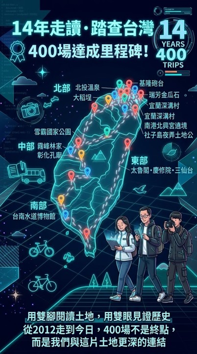

ARCHIVE HUD // SYSTEM ONLINE
宏宏的部落格・圖文專文
EXPEDITION MATRIX : 2012 — 2026
台灣走讀 14 年
400場全足跡紀錄
// 全家三人同行・以雙腳丈量土地・跨越 14 年歷史光譜的田野文史大數據存檔系統
踏查總場次
397
TRIPS
時間跨度
14
YEARS
北部區域
359
場
南部區域
22
場
中部區域
14
場
東部區域
2
場
全部 (397)
北部 (359)
南部 (22)
中部 (14)
東部 (2)
全部 14 個年份
已收錄專文
焦點路徑：
基隆砲台群
保儀大夫遶境
深溝農事
大稻埕老屋
人權場域
全像卡片
終端矩陣表
MATCHED_LOGS:
397
/ 397
GOOGLE SITE ENGINE CONNECTED
INDEX
DATE
REGION
EXPEDITION TITLE
DOCUMENT
NO LOGS FOUND IN CURRENT FREQUENCY
請嘗試變更搜尋關鍵字或調整篩選年份及區域設定。